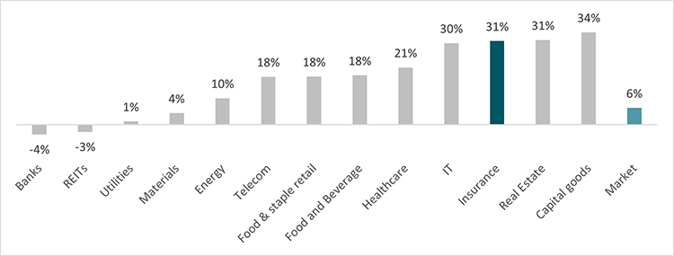
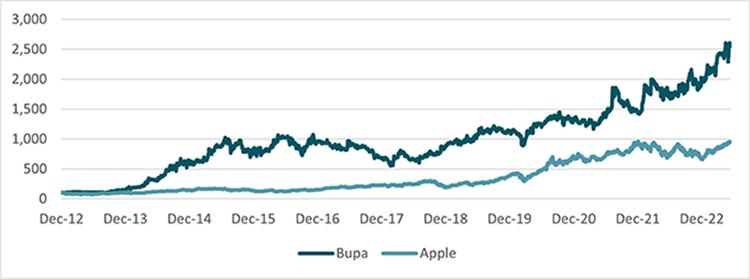
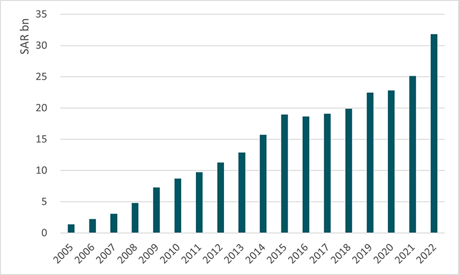

Saudi Insurance Sector – A GCC Success Story
In a remarkable start for 2023, global stock markets have moved up appreciably, defying recessionary fears. In the GCC, the largest regional market followed suit, becoming the second top performing market in the region. This comes on the back of heavy lifting by smaller sectors as larger sectors have been a drag. Their rallies have been fundamentally supported, but valuations are being stretched.
Fig 1: Year-to-date performance of different sectors within the Saudi market

Source: Bloomberg: Data as of 28 May 2023The insurance sector is at the helm of the rally and if one wonders if this is just short-term volatility then one has to look at market leader Bupa’s price performance in the past ten years. It has beaten even the likes of Apple Inc. hands down. So, is this meteoric rise justified? Or is the sector in a bubble waiting to burst?
Fig 2: Bupa’s share price vs. Apple (Dec-2012: 100)

Source: BloombergPrivate health insurance enforcement
The mandatory health insurance for expatriates in the private sector (later extended to nationals) first introduced in 2006 was a turning point. However, growth was initially slow due to the phased implementation of the scheme, and the government was initially cautious in enforcing it. It proved to be a learning experience for the companies, especially in terms of pricing. By 2015, profits of companies like Bupa had substantially increased as they built up scale. The prospects of the sector were further brightened by the development activity in the Kingdom in the first half of the decade, during which the expatriate workforce increased significantly.
Fig 3: Health insurance gross written premiums (2005-2022)

Source: Saudi Central BankGrowth paused in 2014, as oil prices plummeted, with capital spending and business activities slowing down. Furthermore, owing to the government push for localization of the labor force and the onset of the COVID-19 pandemic (which resulted in layoffs), the expatriate workforce fell by a quarter. However, industry fortunes changed for the better as c.1.5 million joined the workforce in 2022 with the economy reopening post-COVID-19. Although checks and balances are in place to ensure the implementation of mandatory insurance, a sizeable gap remains. For example, as of 2022, approximately one million expatriate employees and 674,000 Saudi nationals (plus their families) didn’t have health insurance. This revenue opportunity is even more lucrative considering that the insurance premiums for nationals tend to be much higher than for expatriates.
Working population growth
After the initial excitement with the announcement of the giga projects such as NEOM, there was a quiet period, but it’s clear that they are slowly gaining speed. In the central region, large infrastructure projects such as the new Riyadh Airport stands out and Saudi Arabia’s bid for Expo 2030 could eventually result in further investments. The level of development activity that we envisage would require a much larger workforce in the next 10 years. As such, we project that the private health insurance pool will grow at a healthy rate in the long-term.
Domination of large players
Over the past 10 years, the health insurance industry has become more concentrated. Accordingly, the top two players, Bupa Arabia and Tawuniya, accounted for 75% of gross written premiums in 2022. This has led to higher bargaining power over both their healthcare providers and corporate clientele. As insurance companies account for most of the revenue generated by the private healthcare providers, the two larger players are in a position to demand better pricing and discounts. In addition, this gives them an advantage when negotiating contracts with clients as they are better placed than smaller companies. On a separate note, price competition between larger players has eased as of late.
Challenges
A key challenge faced by the industry is medical inflation, which is a result of not only the rising cost of medical services and consumables, but also higher usage of services by the members. However, as explained, larger players are able to negotiate favorable rates with hospitals and use this leverage to largely pass on the increases to the customers (mainly corporate clients). Therefore, the impact on profitability ratios has been contained. Having said this, smaller companies are worse off on this front, battling medical inflation and rising regulatory related costs.
So, does the insurance sector stocks’ rally have more legs? Clearly, the underlying fundamentals of the health segment are supportive of solid returns in the next five years. Insurance companies will play a key role as the kingdom sits at the cusp of a transformation spelled out by Vision 2030. Standout growth of medical insurance premiums in 2022 stands as an indication of what’s to come. Despite numerous challenges, this segment can singlehandedly propel the insurance industry to greater heights.
Waruna Kumarage, CFA, FCMA
Head of Asset Management Research